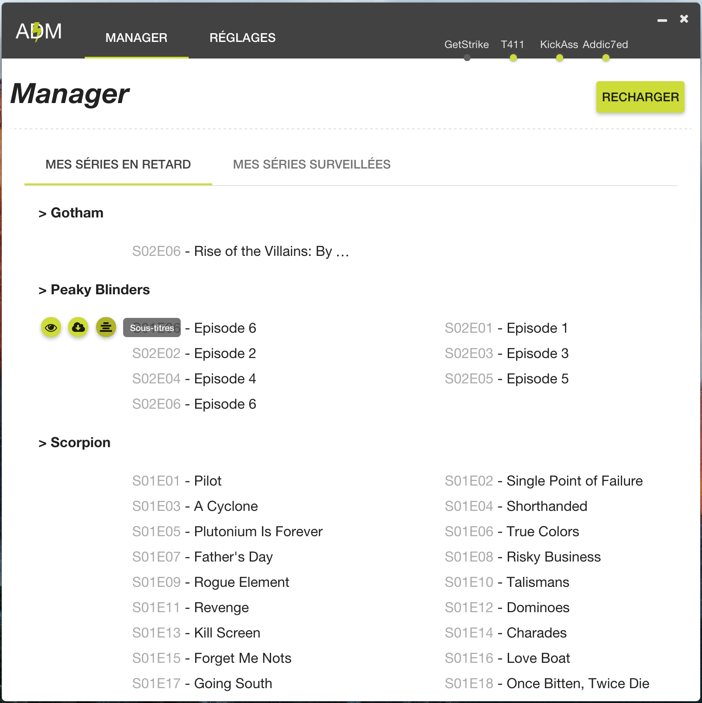

@Hadrien.D
Web Programmer

@Kilhog
Analyst Programmer
Reporter un bug ? - Développé avec ❤ par HKFX Team
Auto Download Manager est un outil qui permet de gérer vos séries automatiquement. En gros le principe est le suivant:
Suivre vos série deviens un jeu d'enfant

Reporter un bug ? - Développé avec ❤ par HKFX Team